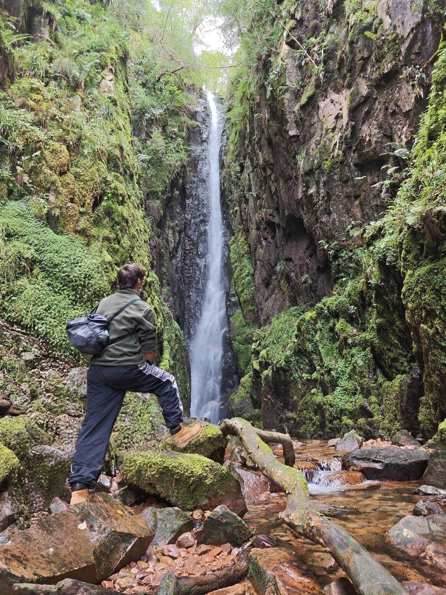
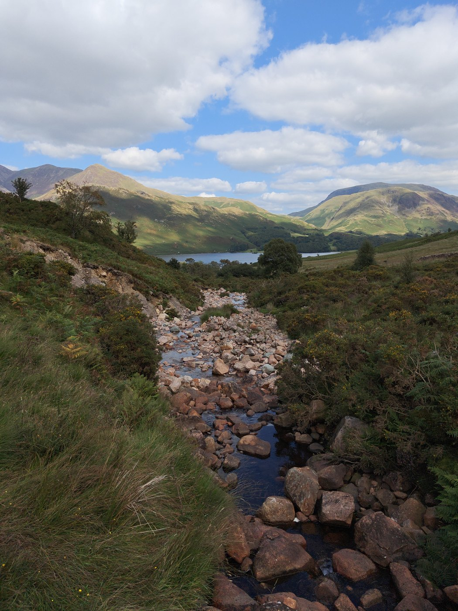
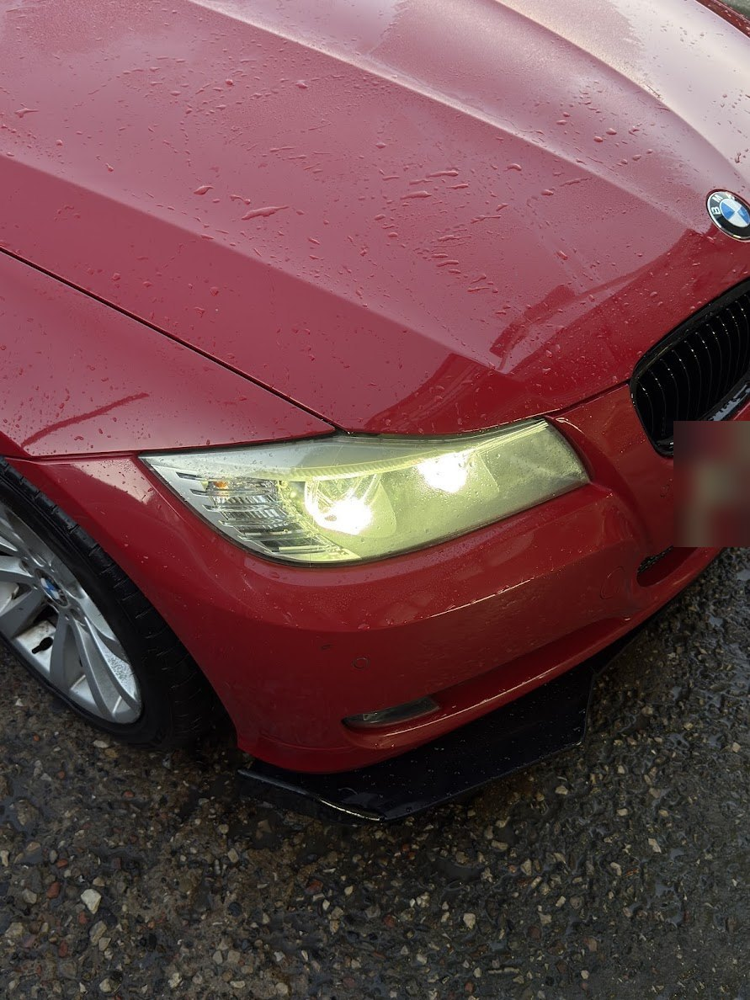
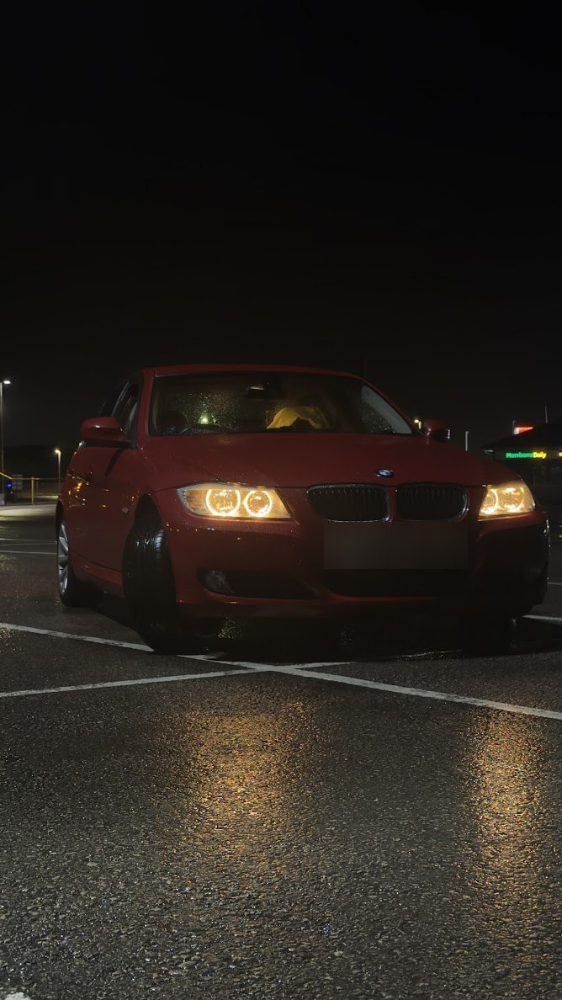

Electrical Engineering student at the University of Lancashire (UCLan) in Preston. I'm passionate about hands-on diagnostics and practical problem-solving — whether that's wiring 12V automotive systems, testing circuits in the lab, or building custom PC rigs and software.
Growing up, I've always loved technology, mechanics, electrics, and computing — whether taking hardware apart to understand how it ticks, building custom PCs, or diagnosing vehicles.
I'm 21 and living in Preston, completing my Foundation Year in Electrical Engineering at the University of Lancashire (UCLan) alongside working as a Bar Team Leader at Wetherspoons (The Velvet Coaster in Blackpool & The Twelve Tellers in Preston).
Before starting university, I worked as an Apprentice Technician at Car Cosmetics, getting proper workshop experience diagnosing mechanical and electrical faults, servicing, bleeding brakes, and wiring vehicle electrics.
Outside of academics and shift leadership, I'm usually out in the workshop on car builds, working on electronics, scrambling fells in the Lake District, or tinkering with software and games.
Preston, Lancashire UKUniversity of Lancashire (UCLan)Electrical EngineeringWorkshop DiagnosticsShift Operations
DWG NOTE // 01-AFIELD NOTES
"I've always learned best by getting hands-on — whether that's working on a car, wiring something up, or building it on a PC."
Discipline: Electrical Engineering
Current Campus: University of Lancashire (UCLan)
Career: Bar Team Leader @ Wetherspoons
Hands-On: Mechanics, Electrics, IT Systems & Audio
Formal technical education record across electrical engineering, computing, and secondary qualifications.
[DEGREE-01]
University of Lancashire (UCLan)
FOUNDATION YEAR
Electrical Engineering (Foundation Year)
2026 — Present
Preston, Lancashire
"foundation year"
Building core engineering maths, physics, and practical lab skills alongside electrical circuit theory, digital electronics, power systems, and sensor instrumentation.
Verified operational career logbook — high-volume team leadership, workshop automotive diagnostics, and amusement ride safety operations.
JOB 04 // CURRENT
Wetherspoons
• Blackpool & Preston
Bar Team Leader
Shift Leadership: Leading high-volume bar and floor teams during peak services with 1,000s of patrons across multi-level seaside and city centre venues.
Operations & Cellar: Cellar stock management, line cleaning, till reconciliation, cash auditing, health & safety, and licensing compliance.
Team Training: Mentoring new starters, ensuring speed of service, and strict adherence to Challenge 25 standards.
The Velvet Coaster · Blackpool
Bar Team Leader at one of the UK’s largest seaside hospitality venues on Blackpool South Shore.
The Twelve Tellers · Preston
Bar Team Leader in city-centre Preston alongside studying Electrical Engineering at University of Lancashire (UCLan).
03/2025 — PresentPromotion to Team Leader"Velvet Coaster → Twelve Tellers"
Studied hardware architectures, von Neumann architecture, registers, assembly concepts, programming foundations, data structures, and operating system kernels.
PC ArchitectureOperating SystemsData StructuresScripting
SYS-02 // HARDWARE & NETWORKINGD*D* DIPLOMA
ICT Systems & Software
Top grades in BTEC IT (D*D*) and GCSE Digital ICT (D*2) — hands-on PC assembly, component fault isolation, IPv4/IPv6 networking, relational database management, and custom software troubleshooting.
PC AssemblyNetworkingDatabase SystemsSoftware & Scripting
CAD-01 // ACADEMIC SPECUCLAN · PRESTON
Electrical Engineering (Foundation Year)
Covering circuit fundamentals, Ohm’s and Kirchhoff’s laws, AC/DC analysis, operational amplifiers, engineering mathematics, and hands-on laboratory circuit testing at the University of Lancashire (UCLan).
Animated demonstration of my custom Discord client themes built with modular CSS, hardware-accelerated animations, acrylic backdrop filters, and custom SVG icon suites. Maintained for BetterDiscord and Vencord users worldwide with active GitHub releases.
Vintage v0.9WindowsXI × MaterialYouBetterDiscord & Vencord400+ Community Members
Minimalist transparent themes and sleek utility stylesheets crafted for high-performance Discord clients and custom CSS engines.
FluidcordGlass UIModular CSS
04.4 // AUDIO ENGINEERING Live Sound & DJ Projects
"live booth, acoustic tuning & sets"
AUDIO-01 // LIVE SOUND & SETUPS
Pioneer DJ Rig & Live Sound Reinforcement
Hands-on experience DJing live events at venues. Practical mastery of Pioneer DJ decks, club mixers, signal routing, gain staging, active PA acoustics, EQ tuning, and frequency separation.
What I do outside the lab and work: fell climbing in the Lake District, car mechanics, and landscape photography.
FIELD-01 // EXPEDITIONSLAKE DISTRICT & FELLS
Mountaineering, Scrambling & Camping
Getting up into the mountains is my favourite way to switch off — climbing fells, scrambling up rocky waterfalls and gorges, and pitch-camping overnight in the valleys. Living in Preston puts the Lake District and Pennines right on the doorstep.

GORGE"waterfall scramble"

FELLS"valley stream"
Lake DistrictGorge ScramblesWild CampingFell Ridges
FIELD-02 // MOTORINGBMW E90 3 SERIES
Motoring, Racing & DIY Mechanics
Cars are a major part of my life. From hands-on shop work at Car Cosmetics to maintaining and modifying my own red BMW E90 3 Series — doing my own mechanical servicing, fluid flushes, brake jobs, and styling upgrades like the front splitter.

DAY VIEW"BMW E90 front"

NIGHT VIEW"angel eyes"
BMW E90MotorsportDIY ServicingCar Meets
SIDE 01
Landscape Photography
Putting my Grade 9 in GCSE Photography to practical use capturing mountain ridges, waterfalls, and automotive shoots.
SIDE 02
PC Hardware & Modding
Building rigs, replacing capacitors, modding software, and troubleshooting electronics.
SIDE 03
Live Sound & Music
Retaining an ear for sound engineering, acoustic setups, and audio routing from my time on the decks.
SHEET 06LP-SHT-06 // CONTACT DIRECT
06 // CONTACT
Contact Me.
SHEET ACTIVE [−]
Open to engineering placements, industrial trainee roles, apprenticeships, and technical opportunities across Preston, Lancashire, and the North West.